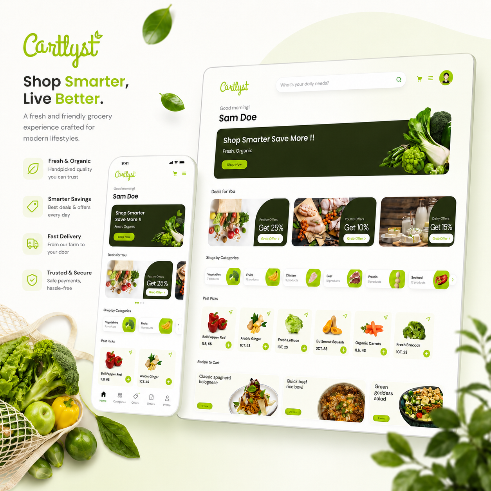

Live Cart Total
Users can see a running total with tax and price changes while shopping.
HCI 594 Capstone Studio
Cartlyst is an IoT-based smart grocery cart tablet interface designed to help shoppers scan items, track live spending, check allergens, manage budgets and complete self-checkout without the usual confusion and sticker shock at the register.

smart cart,
less stress.
01 / Problem
During grocery shopping, users often estimate totals mentally, scan confusing product labels, worry about allergens, and only discover the real cost at checkout. This creates stress, especially for users shopping with strict budgets, dietary needs or time pressure.
52% could not confirm product safety from the label alone.
67% of shoppers reported surprise at checkout.
02 / Solution
Users can see a running total with tax and price changes while shopping.
Saved dietary profiles trigger warnings when scanned items contain risky ingredients.
Users can pay directly through the tablet and skip traditional checkout lines.
03 / Research
We used contextual surveys, user interviews, personas, journey mapping and usability testing to understand grocery shopping friction.
survey participants helped validate grocery shopping pain points
found labels exhausting while shopping
reported rebuying items by mistake
Users were surprised by totals at checkout because they had no reliable running total during the trip.
Users preferred a mounted tablet because it acts like a control center without forcing them to use their phone.
04 / Interactive Cart Playground
Click grocery items, adjust the budget, and watch Cartlyst react with live totals, alerts and checkout feedback.
Live total
No items yet. Start scanning.
05 / Stress Test
Live totals turn surprise into control before checkout.
Ingredient and allergen details appear in a clean readable card.
Self-checkout helps users finish the trip from the cart.
06 / Key Insights
07 / Persona 01
Sam is 72 and sees the tablet as a live checklist, not a computer. He wants to follow doctor-recommended dietary rules, avoid physical and mental strain, and shop without reading small labels.

08 / Persona 02
Sarah is a tech-savvy stay-at-home mom of three. She sees Cartlyst as a control center that helps her move fast, find deals, stay on budget and avoid long checkout lines.

09 / Customer Journey
The highest-friction moments were checking labels, tracking spending and checkout. Cartlyst responds with allergen flags, live total alerts and self-checkout.

10 / System Thinking
User scans or browses items from the cart tablet.
Cartlyst checks allergens, ingredients and saved preferences.
The live total updates with every item added.
User checks out directly from the cart tablet.
11 / Store Navigation
Hover over the aisles to see how Cartlyst can guide shoppers inside the store.
12 / Project Pipeline
Survey, interviews, class activity and literature review.
Storyboard, personas, journey map and smart cart feature planning.
Paper wireframes and low-fidelity tablet screens.
Tested budget setup, cart flow, allergen alerts and checkout.
Final UI screens with onboarding, scanning, live total and payment.
13 / Wireframes
Click any wireframe to view it larger.
14 / Final Features
Quick setup for dietary preferences and budget in under two minutes.
Real-time running total including tax and weight-based pricing.
Scanned products show ingredients, warnings and product details clearly.
Guided path to reduce search fatigue and cognitive load.
Proactive alerts when users are approaching or crossing their set limit.
Secure payment directly through the tablet to reduce checkout wait time.
15 / Feature Moments
Helps users avoid rebuying the same products by mistake.
Ingredient and allergen alerts appear before the item reaches checkout.
Shows when users are approaching or crossing their set budget.
Helps catch unpaid items before users leave the store.
16 / Final Design
The final UI focuses on clean navigation, visible totals, high-contrast warnings and simple checkout.

17 / Product Walkthrough
This video shows how users can scan items, track their budget, get alerts, and move through checkout.
18 / Prototype
Explore the Cartlyst smart cart tablet flow, including onboarding, scanning, budget tracking, allergen alerts and checkout.
19 / Reflection
This project taught me that strong UX is not just about showing more information. It is about showing the right information at the right time. Cartlyst became stronger because every feature was connected back to a user pain point: budget stress, label confusion, accessibility needs and checkout friction.
Preview
Press Esc to closeCartlyst Prototype
Press Esc to close